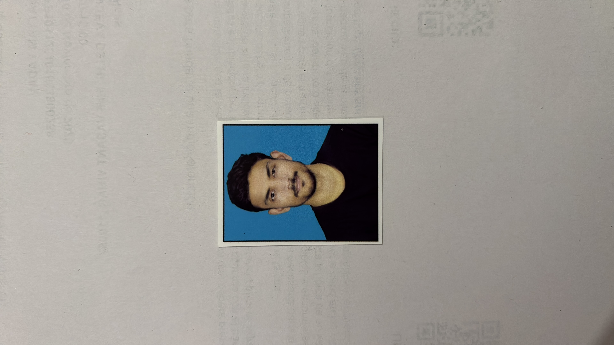

01
Production ownership
Design, rollout, P1/P2 recovery and hands-on debugging with Splunk and batch diagnostics.
Java/Spring engineer with 3 years of telecom BSS experience — building high-volume services, batch pipelines, event-driven flows and production tooling.
public class Satyam {
build(scale, resilience) {
return system
.design()
.ship()
.observe()
.improve();
}
}
// 5M+ telecom tx/day
// 500K+ events/day
My work spans telecom BSS workflows, backend services and production operations — from order, CRM/CSM and account flows to Java/Spring systems processing millions of transactions.
I like understanding the full chain: business behavior → service design → data → observability → safe rollout.
Design, rollout, P1/P2 recovery and hands-on debugging with Splunk and batch diagnostics.
Upgraded Java 8 → 21, Spring Batch 3.x → 5.x and Spring Boot 3 while taking on new internal AI tooling.
Amdocs Ensemble CRM/CSM/OMS flows covering ordering, account actions and customer management.
Amdocs · Telecom BSS
Amdocs · Telecom BSS
Enterprise Spring Batch authentication modernization — replacing static credentials with service-to-service identity while retaining backward compatibility.
Grouped around the work I actually ship.
A personal AI assistant built around local models, voice interaction, memory, retrieval and tool workflows on a Mac.
Individual recognition for resolving critical production incidents.
Recognized for delivering the Mexico authentication modernization to production.
LeetCode and CodeChef practice across data structures and algorithms.
B.Tech · Computer Science & Engineering
Backend engineering, platform work or systems-heavy challenges — feel free to reach out.